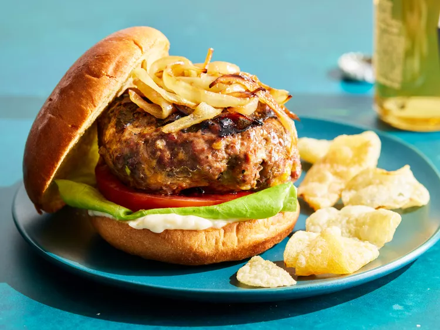

Hamburger

A burger is a patty of ground beef grilled and placed between two halves of a bun. Slices of raw onion, lettuce, bacon, mayonnaise, and other ingredients add flavor. Burgers are considered an American food but are popular around the world. In Japan, teriyaki burgers are popular.
Ingredients :
- lean ground beef
- onion, finely chopped
- Shredded Colby Jack or Cheddar cheese
- dry onion soup mix
- garlic, minced
- garlic powder
- soy sauce
- Worcestershire sauce
- dried parsley
- dried basil
- dried oregano
- crushed dried rosemary
- salt and pepper to taste
Recipe :
- Gather all ingredients. Preheat an outdoor grill for high heat and lightly oil the grate.
- Meanwhile, combine ground beef, onion, cheese, egg, onion soup mix, minced garlic, garlic powder, soy sauce, Worcestershire sauce, parsley, basil, oregano, rosemary, salt, and pepper in a large bowl.
- Use your hands to form the mixture into 4 patties.
- Cook patties on the preheated grill until no longer pink in the center and the juices run clear, about 4 to 5 minutes per side.
Return to Home